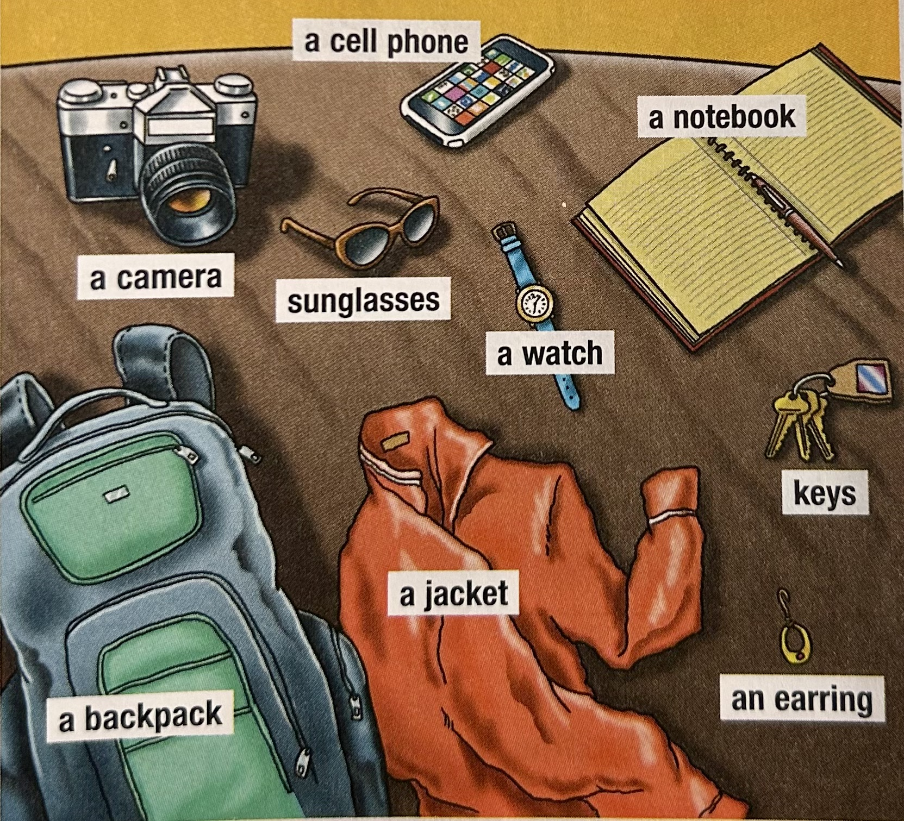
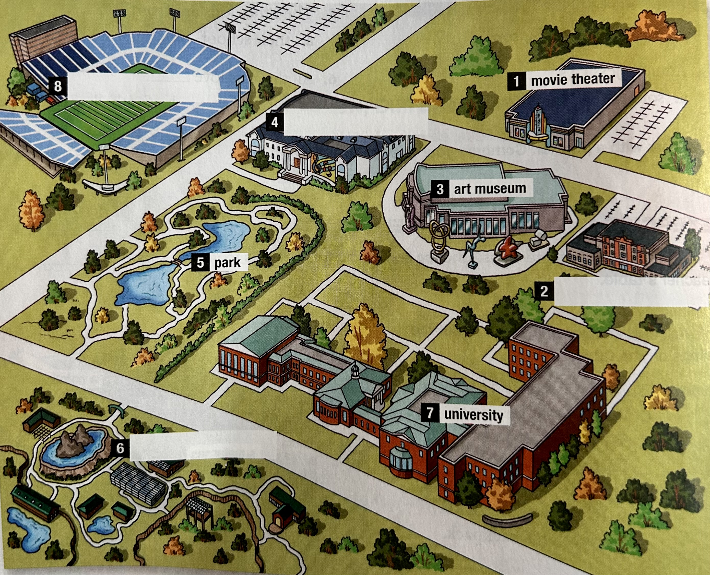

A. Vocabulary: Study the words. Then work with a partner. Practice the conversation.
a university
a sports stadium
a museum
a zoo
Conversation
A: Is that a museum?
B: Yes, it is.
A: Is there a museum in your city?
B: Yes. It’s the Museum of Art. It’s big, and it’s famous.
B. Look at the words and photos in A again. Talk about three places in your city.
A: Is that _______ ?
B: Yes, it’s ________.
A: Is there _______ in your city?
B: Yes. It’s ________. It’s ________.
Steve: Well, here we are. That’s the Space Needle. How about a photo?
Amy: Sure. I have my camera.
Steve: Come on. Let’s go up.
CenturyLink Field and Safeco Field
University of Washington
Experience Music Project
Amy: Wow! Look at the two buildings over there.
Steve: They’re stadiums.
Amy: They’re big! Are those people next to them? They look so small.
Steve: Yes. Now look over there. That’s the University of Washington.
Amy: The colors are beautiful. Its shape is really interesting.
Steve: That’s the EMP. It’s a music museum. It belongs to Paul Allen. It’s his museum.
Amy: Let’s go see it.
Steve: That’s a great idea.
| Singular | Plural |
|---|---|
| That is the stadium. | Those are the stadiums. |
| That’s his car. | Those are his cars. |
| Is that your key? | Are those your keys? |
| Subject Pronouns | Possessive Adjectives | Example Sentences |
|---|---|---|
| I | my | I am Amy. My name is Amy. |
| you | your | You are Judy. Your name is Judy. |
| he | his | He is Steve. His name is Steve. |
| she | her | She is Jenny. Her name is Jenny. |
| it | its | It is the EMP. Its shape is unusual. |
| we | our | We have one daughter. Our daughter is Judy. |
| they | their | They are our children. Their names are Judy and Ken. |
Read the questions and answers. Underline the possessive adjectives. Then match the questions and answers.
Complete the sentences with that or those.
Look at the pictures. Complete the sentences. Circle the correct answers.
Judy is showing photos of her family. Complete the passage with my, his, her, our, or their.
That's me and ______ brother, Ken, with ______ parents in front of ______ house. We love ______ house. It's close to the sports stadium. ______ father loves sports. The stadium is ______ favorite place! ______ mother doesn't like sports, so the stadium isn't ______ favorite place! Oh, and Ken is a student. ______ university is near the house, too.
Listen to each sentence. Which word do you hear? Circle the correct answer.
There are six mistakes in the conversations. The first mistake is corrected. Correct five more.
Listen to Judy and Jessica's conversation. Complete the sentence. Check (✓) the correct answer.
Work with a partner. Choose something that belongs to you. Put it on the teacher's table.
Ask and answer questions about the things on the table.
Example:
A: Who does it belong to?
B: That's her backpack.
C: No, that’s his backpack.
Work with a partner. Ask questions about buildings and complete the map.
Read the paragraph and chart, and look at the photo. Underline examples of that, those, and possessive adjectives. Then find a photo of a place in your town or city. Complete the chart about it. Work with a partner. Tell your partner about the place in the photo.
| Name of town or city | Seattle |
|---|---|
| Name of place | Safeco Field |
| Type of place | Baseball Stadium |
| People in the place | Baseball Players |
Write a paragraph about the place in your photo. Use that, those, and possessive adjectives. Use the paragraph in A and your chart to help you.
Read your paragraph. Underline examples of that, those, and possessive adjectives. Use the editing checklist to check your work.
Read your paragraph again. Can you improve your writing? Make changes if necessary.
A: Is those your family in the photo?
B: Yes. That's me brother, and that's me sister.
A: What are they're names?
B: He's name is Robert, and her name is Tammy.
A: That your dog?
B: Yes. Its name is Spot.